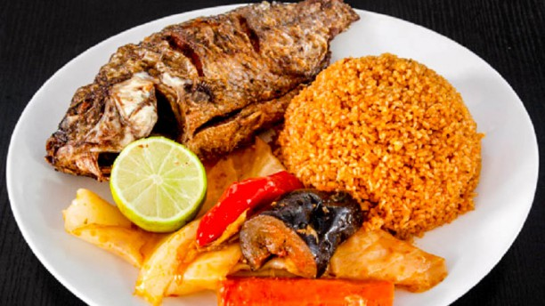
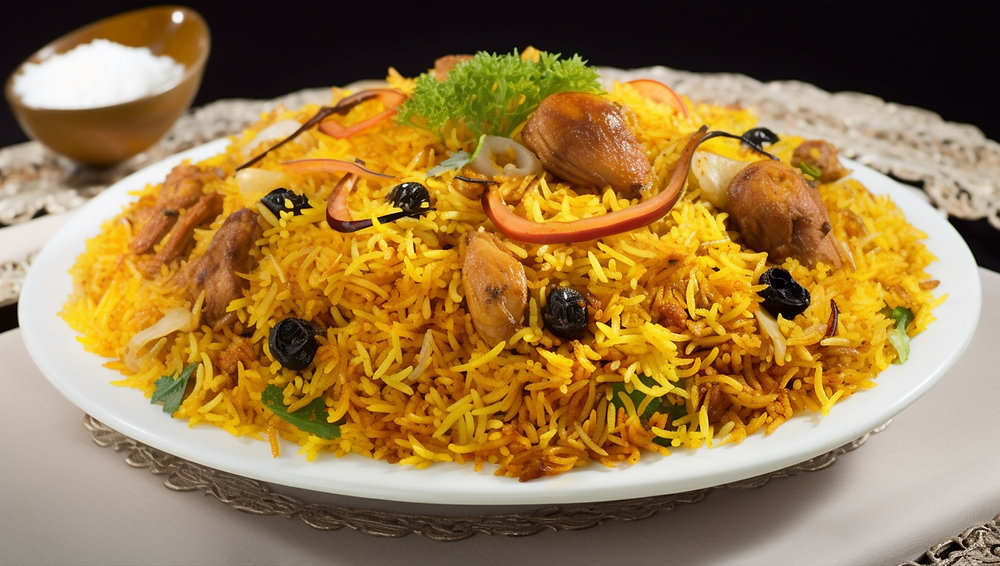
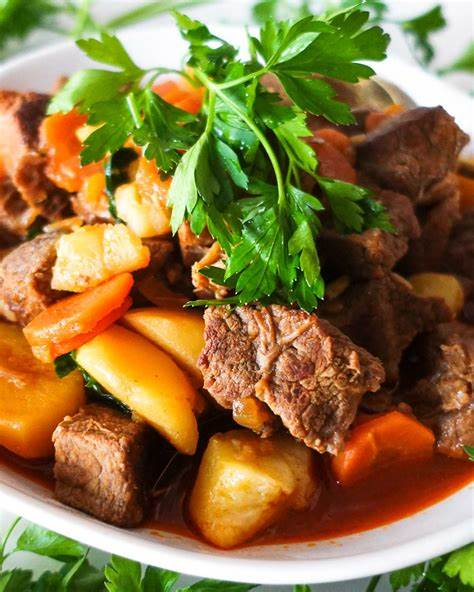
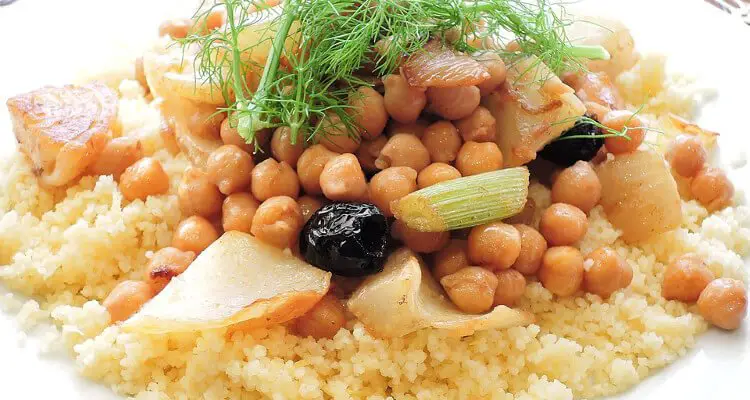

Poulet Yassa (Sénégal) 30dt
Poulet mariné dans une sauce à base de citron, d'oignons et de moutarde, accompagné de riz

Thiéboudienne (Sénégal) 25dt
Riz accompagné de poisson, légumes et sauce tomate épicée, plat traditionnel sénégalaisMafé (Mali) 30dt
Viande de bœuf dans une sauce épicée à base d'arachide, accompagnée de riz
Jollof Rice (Nigeria) 35dt
Riz cuit dans une sauce tomate épicée, accompagné de viande ou de poissonGarba (Côte d'Ivoire) 25dt
Un plat ivoirien emblématique à base d’attiéké et de poisson frit, relevé avec des piments et des oignons pour une explosion de saveurs
Couscous aux légumes (Maroc) 25dt
Semoule de blé servie avec des légumes cuits dans une sauce savoureuse

Biryani (Afrique de l'Est) 40dt
Riz épicé servi avec du poulet, de l'agneau ou des légumes

Ragoût de bœuf à l'africaine (Afrique de l'Ouest) 25dt
Ragoût de bœuf avec des légumes et des épices traditionnellesFufu et sauce gombo (Cameroun) 25dt
Fufu servi avec une sauce épicée à base de gomboRiz au poisson (Nigeria) 30dt
Riz cuit avec des légumes et du poisson frit, dans une sauce épicée
Riz aux légumes (Sénégal) 22dt
Riz cuit avec un assortiment de légumes de saisonYam frit (Nigeria) 20dt
Patates douces frites, servies avec une sauce épicéeNdolé végétarien (Cameroun) 15dt
Feuilles de bitterleaf cuites avec des épices et des légumes
Tajine de légumes (Maroc) 40dt
Mélange de légumes mijoté dans une sauce épicéeCurry de légumes(Afrique de l'Est) 25dt
Légumes cuits dans une sauce crémeuse au lait de cocoEba et sauce aux légumes (Nigeria) 20
Boulettes de manioc servies avec une sauce végétarienne épicéeSalade de mangue et avocat (Côte d'Ivoire) 18dt
Mélange de mangue fraîche et d'avocat avec une vinaigrette légèreKoshari (Égypte) 30dt
Mélange de lentilles, riz, pâtes et pois chiches, servi avec une sauce tomate épicée

Vegetarian couscous (Tunisie) 15dt
Couscous accompagné de légumes de saison cuits dans un bouillon épicé
Fried(Ouganda/Kenya) 30dt
Bananes plantains frites servies avec un mélange de légumes épicés
Samosas (Afrique de l'Ouest) 15dt
Pâtisseries frites farcies avec un mélange de légumes ou de viande hachée épicée
Soupe de poisson (Côte d'Ivoire) 30dt
Soupe épicée de poisson servie avec du riz ou du pain
Accara(Côte d'Ivoire) 20dt
Beignets frits à base de haricots noirs, souvent servis avec une sauce pimentée
Brochettes de légumes (Cameroun) 25dt
Brochettes de légumes grillés, souvent accompagnées de sauce épicée
Chakchouka (Tunisie) 25dt
Mélange d'œufs et de légumes cuits dans une sauce tomate épicée
Salade de palme (Côte d'Ivoire) 20dt
Salade à base de cœur de palmier, de légumes frais et de sauce épicée
Tartare de thon à l'africaine (Afrique de l'Ouest) 40dt
Thon cru mariné dans une sauce épicée, servi avec des légumes frais
Salade d'avocat et mangue (Afrique de l'Ouest) 30dt
Mélange d'avocat, de mangue et d'assaisonnements légers
Caviar d'aubergine épicé (Maghreb) 25dt
Aubergines grillées écrasées avec de l'ail, du citron et des épices
Falafel(Égypte) 20dt
Boulettes frites de pois chiches ou fèves
Tarte à la noix de coco (Côte d'Ivoire) 40dt
Pâte sablée garnie d'une crème à la noix de coco sucrée
Gâteau au manioc (Côte d'Ivoire) 30dt
Gâteau moelleux préparé avec de la farine de manioc.
Baklava (Afrique du Nord) 40dt
Pâtisserie feuilletée à base de noix et de miel
Crêpes à la banane (Afrique de l'Ouest) 25dt
Crêpes servies avec des bananes caramélisées
Panna cotta (Afrique de l'Est) 25dt
Crème à la vanille, nappée de purée de mangue
Beignets africains (Afrique de l'Ouest) 15dt
De petits beignets moelleux et sucrés, parfumés à la vanille ou à la muscade, parfaits pour accompagner une boisson chaude
Gâteau à la patate douce (Afrique de l'Ouest) 15dt
Un gâteau fondant préparé avec de la purée de patate douce, parfumé à la cannelle et à la noix de muscade
Makroudh (Maghreb) 10dt
Pâtisserie maghrébine fourrée aux dattes ou aux amandes, parfumée à l'eau de fleur d'oranger et trempée dans du miel
Halwa tunisienne(Maghreb) 25dt
Une douceur à base de semoule, sucre et beurre, souvent agrémentée de pistaches ou de noisettes
Malva pudding (Afrique du Sud) 20dt
Dessert d'Afrique du Sud, ce pudding moelleux est à base d'abricot,Jus de bissap (Sénégal) 40dt
Jus à base de fleurs d'hibiscus, sucré et rafraîchissantGnamakoudji (Côte d'Ivoire) 30dt
Boisson à base de gingembre, de sucre et de citron, très populaire en Afrique de l'Ouest
Jus de tamarin (Afrique de l'Ouest) 40dt
Jus sucré et légèrement acide, préparé avec des tamarins fraisLassi mangue (Afrique de l'Ouest) 25dt
Boisson à base de yaourt et de mangue, douce et crémeuseTej (Éthiopie) 25dt
Vin de miel épicé traditionnellement servi en ÉthiopieCafé à la cardamome (Afrique de l'Est) 20dt
Café traditionnel préparé avec des graines de cardamomeNerikodo (Côte d'Ivoire) 40dt
Boisson à base de lait fermenté et de millet, populaire dans certaines régionSmoothie (Afrique du Sud) 30dt
Mélange sucré de fruits tropicaux frais, parfait pour accompagner un repas léger
Mangue 15dt
Délicieusement sucrée et juteuse, la mangue est riche en vitamines A et C, idéale pour une collation nourrissante et rafraîchissante
Pastèque 20dt
Composée à 92 % d’eau, la pastèque est le fruit parfait pour s’hydrater et se rafraîchir lors des journées chaudesPapaye 15dt
Douce et légèrement crémeuse, la papaye est riche en enzymes qui favorisent la digestion, en plus d’être un régal frais et sucré
Goyave 20dt
Ce fruit tropical, au goût doux et acidulé, est riche en vitamine C et en fibres, parfait pour renforcer l’immunité tout en se désaltérantAnanas 15dt
Juteux et sucré, l'ananas est une explosion de saveurs tropicales, idéal pour les jus ou les desserts rafraîchissantsCorossol (Soursop) 15dt
Ce fruit crémeux au goût légèrement acidulé est souvent utilisé pour préparer des boissons glacées et des desserts rafraîchissantseCoco 10dt
L’eau de coco est une boisson naturelle riche en électrolytes, idéale pour se réhydrater rapidement lors de journées chaudesOrange locale 10dt
Riche en vitamine C et en jus, l’orange locale est parfaite pour les petits-déjeuners ou les pauses rafraîchissantesZaban (Pommes sauvages d'Afrique) 10dt
Ce fruit acidulé est consommé frais ou utilisé pour préparer des jus et confitures désaltérantsDatte 15dt
Sucrée et énergétique, la datte est une collation idéale pour les journées chaudes et une source d'énergie rapideCactus (Figue de Barbarie) 20dt
Ce fruit juteux et sucré, également appelé "poire cactus", est idéal pour lutter contre la chaleur
Carambole (Starfruit) 10dt
Avec son goût légèrement acidulé et sa forme étoilée, la carambole est parfaite pour des salades de fruits rafraîchissantesGoûtAfricain
À propos de nous Contactez-nous Réservation Politique de confidentialité Termes & ConditionsCommentaire
Faites-nous part de vos avis ou propositions
{kind=link}


{kind=link}
© GoûtAfricain, Tous droits réservés.